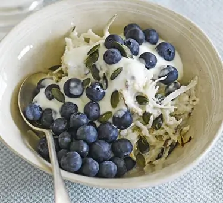
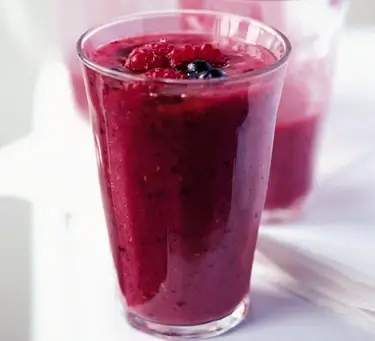
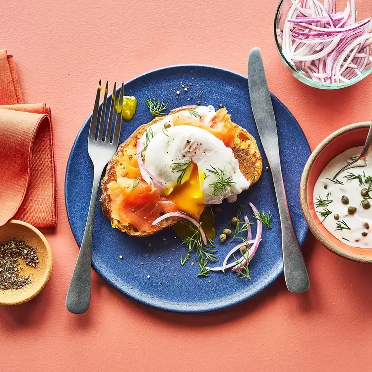
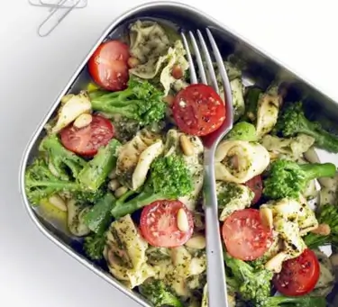
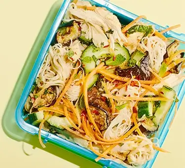
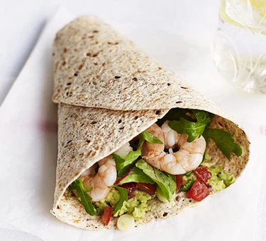
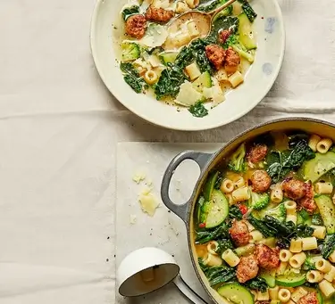
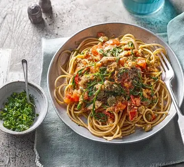
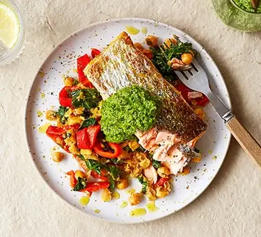

Breakfast

Pear & Blueberry Breakfast Bowl
Ingredients
- 1 firm but ripe red-skinned pear, peeled
- 2 tbsp oats
- 150g natural yoghurt
- 3 tbsp skimmed milk, plus a little bit extra
- 1 tbsp pumpkin seeds
- 2 handfuls blueberries
Method
- Grate the pear into a bowl and add the oats, half the yogurt, the milk and most of the seeds. Leave for 5-10 mins, then check the consistency and dilute with a little more milk or water if it is too thick. Spoon on the remaining yogurt, pile on the berries and remaining seeds, then serve.
Nutrition per serving:
kcal
415
415
fat
10g
10g
carbs
57g
57g
protein
20g
20g

Breakfast Smoothie
Ingredients
- 1 small ripe banana
- about 140g blackberries, blueberries, raspberries or strawberries
- apple juice or mineral water, optional
- runny honey, to serve
Method
- Slice the banana into your blender or food processor and add the berries of your choice. Whizz until smooth. With the blades whirring, pour in juice or water to make the consistency you like. Toss a few extra fruits on top, drizzle with honey and serve.
Nutrition per serving:
kcal
124
124
fat
1g
1g
carbs
25g
25g
protein
2g
2g

Savory French Toast with Smoked Salmon
Ingredients
- 1 clove garlic, grated, divided
- 2 tbsp crème fraîche or sour cream
- 3/4 tsp capers, rinsed
- 3/4 tsp chopped fresh dill, plus more for garnish
- 3/4 tsp lemon juice
- a small pinch ground pepper, divided
- 2 medium eggs, divided
- 2 tbsp milk
- a small pinch dry mustard
- 1 slice crusty whole-wheat bread
- 1/2 tbsp extra-virgin olive oil
- 28g smoked salmon, (1-2 slices)
- thinly sliced red onion for garnish, optional
Method
- Preheat oven to 120 degrees C.
- Combine half the garlic, crème fraîche (or sour cream), capers, dill, lemon juice and 1/4 teaspoon pepper in a small bowl. Set aside.
- Whisk 2 eggs, milk and dry mustard with the remaining garlic and 1/4 teaspoon pepper in a shallow dish.
- Place 2 slices of bread in the custard and let sit for 30 seconds, flipping once halfway to coat evenly. Heat 1 tablespoon oil in a large nonstick or cast-iron skillet over medium-high heat. Add the soaked bread and cook, flipping once, until lightly browned and crispy, 1 to 2 minutes per side. Transfer to a baking sheet and keep warm in the oven. Repeat with the remaining 1 tablespoon oil and 2 slices of bread.
- Meanwhile, poach or fry the remaining 4 eggs as desired.
- Top the French toast with smoked salmon, the cooked eggs and the reserved sauce. Garnish with onion and more dill, if desired.
Nutrition per serving:
kcal
481
481
fat
30g
30g
carbs
28g
28g
protein
24g
24g
Lunch

Tortellini with Pesto & Broccoli
Ingredients
- 70g Tenderstem broccoli, cut into short lengths
- 125g fresh tortellini
- 1 1/2 tbsp pesto (fresh if you can get it)
- 1 tbsp toasted pine nuts
- 1/2 tbsp balsamic vinegar
- 4 cherry tomatoes, halved
Method
- Bring a large pan of water to the boil. Add the broccoli, cook for 2 mins, then add the tortellini and cook for 2 mins, or according to pack instructions. Drain everything, gently rinse under cold water until cool, then tip into a bowl. Toss with the pesto, pine nuts and balsamic vinegar. Add the tomatoes, pack into containers and chill. Let the salad get to room temperature during the morning to get the most flavour from the tomatoes and pesto.
Nutrition per serving:
kcal
287
287
fat
13g
13g
carbs
32g
32g
protein
12g
12g

Sesame Chicken Noodles
Ingredients
- 1/2 tbsp tahini
- 1/2 lime, juiced
- 1 tsp soy sauce
- 1 roasted garlic clove
- 1/2 tsp sesame oil
- a small pinch chilli flakes, plus extra to serve
- 100g cooked rice noodles
- 100g leftover roast chicken
- 1/2 roasted aubergine
- 1/2 carrot, grated
- 1/4 cucumber, seeds removed and cut into half moons
- 1/4 small pack mint, roughly chopped
Method
- Whisk together the tahini, lime juice, soy sauce, flesh from the roasted garlic, sesame oil and chilli flakes in a large bowl, adding enough water to make a creamy dressing.
- Add the noodles, leftover roast chicken, aubergine and carrot and toss everything to combine, then gently fold through the cucumber and mint. Divide between two containers, then sprinkle over a few extra chilli flakes to serve.
Nutrition per serving:
kcal
253
253
fat
12g
12g
carbs
14g
14g
protein
16g
16g

Prawn & Avocado Wrap
Ingredients
- 1 very ripe baby avocado, stoned, peeled and roughly chopped
- juice 1/2 lime
- few shakes Tabasco sauce
- 1 tomato, deseeded and chopped
- 1 spring onion, sliced
- 1 seeded flour tortilla
- handful mixed salad leaves
- 85g cooked and peeled prawn
Method
- Put the avocado in a bowl with the lime juice, Tabasco and some seasoning. Roughly mash, then add the tomato and spring onion.
- Warm the wrap in the microwave for a few seconds. Spread the avocado mixture down the middle, scatter on the salad leaves and finish with the prawns. Roll up, then eat.
Nutrition per serving:
kcal
487
487
fat
32g
32g
carbs
27g
27g
protein
22g
22g
Dinner

Sausage & Kale Minestrone
Ingredients
- 1/4 tbsp vegetable oil
- 1/4 red onion, finely chopped
- 1 sausage, skin removed
- 1 garlic clove, finely grated
- 1/4-1/2 red chilli, depending on home much heat you prefer, sliced
- 1/4 large head of broccoli, finely chopped
- 1/2 courgette, sliced into half-moons
- 50g small pasta (we uses ditalini)
- 1/4 litre chicken stock, made with low-salt chicken stock cube
- 50g curly kale or cavolo nero, stalks removed, roughly chopped
- 1/4 lemon, zested and juiced
- 5g parmesan, shaved
Method
- Heat the oil over a medium heat in a large, deep pot that has a lid. Cook the onion for 10 mins until softened and golden at the edges.
- Crumble in the sausages, breaking them into bite-sized pieces using a spoon. Cook for 7-8 mins until golden and crisp. Stir in the garlic and chilli.
- Add the broccoli and courgettes. Cook for 10-12 mins until soft, then pour in the pasta and chicken stock. Stir to combine, then bring to a boil. Reduce to a simmer, put the lid on and cook for 8-10 mins, until the pasta is almost cooked.
- Wilt in the kale or cavolo nero in batches and cook for a further 2-3 mins, until the kale is cooked and the pasta is al dente. Squeeze in the lemon juice and season well. Divide between four bowls and sprinkle over the lemon zest and parmesan shavings to serve.
Nutrition per serving:
kcal
102
102
fat
4g
4g
carbs
11g
11g
protein
5g
5g

Sardine Tomato Pasta with Gremolata
Ingredients
- 75g wholemeal spaghetti
- 1/2 x 120g can sardines in oil
- 1/2 tbsp capers, drained
- 2 garlic cloves, crushed
- 2 tomatoes, roughly chopped
- 30g rocket
- 1/2 lemon, zested
- small handful of parsley, finely chopped
Method
- Cook the pasta following pack instructions in a large pan of boiling salted water. Heat 1 tbsp oil from the can of sardines in a non-stick frying pan over a medium heat and sizzle the capers and half the garlic for 1-2 mins until fragrant. Tip in the tomatoes and fry for 4-5 mins more until softened and bursting. Stir in the sardines and rocket, tossing a few times to break up the fish and wilt the leaves. Season.
- For the gremolata, combine the lemon zest, parsley and remaining garlic in a small bowl, and season. Drain the pasta and top with the sardine sauce and gremolata.
Nutrition per serving:
kcal
405
405
fat
9g
9g
carbs
53g
53g
protein
23g
23g

Salsa Verde Salmon with Smashed Chickpea Salad
Ingredients
- 1 1/2 tsp olive oil
- 1/2 orange, zested and juiced
- 1 skin-on salmon fillet
- small bunch of parsley (including stalks), finely chopped
- 1/4 tbsp Dijon mustard
- 1/2 shallot or 1/4 small red onion, finely chopped
- 1/4 tbsp red wine vinegar
- 1/2 x 400g can chickpeas, drained and rinsed
- 1 roasted pepper from a jar, drained and chopped
- 25g kale
Method
- Heat the grill to high. Whisk 1 tsp of the oil with the orange zest, a splash of the juice, lots of black pepper and a small pinch of salt. Put the salmon, skin-side down, on a non-stick baking tray and pour over the marinade. Leave to marinate at room temperature while you make the salsa.
- Put the parsley, mustard, half the shallot, the vinegar, 1 tsp oil, and the remaining orange juice in a small food processor and blitz to a thick sauce, adding a splash of water to loosen if needed.
- Heat the remaining oil in a frying pan and fry the remaining shallot for 5 mins. Stir in the chickpeas and some seasoning, turn up the heat and stir until the chickpeas are just starting to crisp. Mash roughly with a potato masher and stir in the roasted peppers and kale. Add a splash of water and cover with a lid until the kale is wilted. Keep warm over a low heat.
- Grill the salmon for 4-6 mins, or until cooked to your liking. Spoon half the chickpeas onto a plate, top with a salmon fillet (leaving the skin behind if you like), and spoon over some of the salsa verde.
Nutrition per serving:
kcal
297
297
fat
16g
16g
carbs
14g
14g
protein
24g
24g